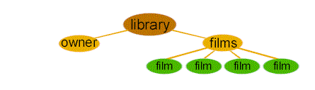

|
| ||
|
| ||
Charles Heinemann
Microsoft Corporation
Updated: November 5, 1998
 Download this document in Microsoft Word (.DOC) format (zipped, 14.2K).
Download this document in Microsoft Word (.DOC) format (zipped, 14.2K).
Contents
Introduction
Overview of XML
Authoring XML
Converting HTML to XML
The XML Document's Tree Structure
Textual Markup
XML's Syntactic Differences
XML is becoming the vehicle for structured data on the Web, fully complementing HTML, which is used to present the data. By breaking structured data away from presentation, Web developers can begin to build the next generation of Web applications.
Currently, Internet Explorer 4.0 and Internet Explorer 5 ship with XML parsers. The parser shipped with Internet Explorer 5 is a high-performance, validating parser that includes full support of the W3C DOM Recommendation. In addition, it contains an XSL processor based on the W3C working draft, a high-performance C++ XML Data Source Object, and the ability to browse XML files directly. For more information about XML support in Internet Explorer 5, see the XML Overview on this site.
Learning to author XML and manipulate XML data sources will enable you as an HTML author to supply your Web pages with content that is more intelligent and more dynamic. Marking up data using XML will also enable you to create data sources that can be accessed in a number of different ways for a number of different purposes, making interoperability between applications and your Web site possible.
Although XML differs from HTML in some fundamental ways, learning to author XML documents does not require a great deal of effort, once you are familiar with HTML. Because HTML and XML both share a common heritage (SGML), their syntax is very similar. As an HTML author, you will already be familiar with many aspects of XML's syntax before you even begin to read any XML code.
XML, like HTML, is made up of elements. Within HTML, elements are often referred to as "tags." However, a distinction between tags and elements must be made clear, for treating them as one and the same could cause you to run into some problems when creating sound XML documents. A tag is a singular entity that opens or closes an element. For instance, the <P> HTML tag opens a paragraph element. Likewise, the </P> HTML tag closes a paragraph element. These two tags, plus the content between them, represent the HTML element. A tag is only part of an element, not the element itself.
Like HTML, XML's purpose is to describe the content of a document. Unlike HTML, XML does not describe how that content should be displayed. Instead, it describes what that content is. Using XML, the Web author can semantically mark up the contents of a document, describing that content in terms of its relevance as data.
For example, the following HTML element
<P>The Phantom of the Opera</P>
describes the contents within the tags as a paragraph. This is fine if all we are concerned with is displaying the words "The Phantom of the Opera" within a Web page. But what if we want to access those words as data? Using XML, we can mark up the words "The Phantom of the Opera" in a way that better reflects their significance as data:
<film>The Phantom of the Opera</film>
Note: Although XML does not describe a display structure, you can display your XML code using a style sheet language, such as XSL. For more information concerning XSL, see http://msdn.microsoft.com/xml/xslguide/.
XML does not limit you to a set library of tags. When marking up documents in XML, you can choose the tag name that best describes the contents of the element. For instance, in the above case, <FILM> may not be accurate enough. You may need to differentiate between the silent classic, starring Lon Chaney, and the 1989 remake, starring Robert Englund. This can be achieved a number of ways. You could create a more specific name for the element:
<silent-film>The Phantom of the Opera</silent-film>
That would adequately serve your purposes in this particular case. But what if you wanted to access all films, regardless of whether they have sound, and still differentiate between versions of the film? In such a case, referring to the contents as a "silent-film" would not be as useful as referring to it as simply a film. However, if we were to change it back we would be left with the same ambiguities as before.
One solution is to use an attribute to describe the type. XML allows you to place attributes on elements. The naming of such attributes, just as with tag names, is the domain of the author. Using an attribute, you could describe "The Phantom of the Opera" as a film and then specify whether that film has sound:
<film sound="no">The Phantom of the Opera</film>
You are now faced with another dilemma: There is more than one version of the movie with sound. The following element
<film sound="yes">The Phantom of the Opera</film>
remains ambiguous. Because XML allows for multiple attributes, however, you can resolve such ambiguities by adding a second attribute:
<film sound="yes" year="1989">The Phantom of the Opera</film>
The above markup might be a bit more complex than <P>, but we are now able to distinguish when the words "The Phantom of the Opera" refer to one film and when they refer to another. In the future, this could enable the cataloging of such films in a variety of ways.
Let's now take a look at an HTML document and convert that document into an XML document. The following document describes the contents of a personal video library:
<H1>The Library of J.Grubb Alexander</H1>
<TABLE>
<TBODY>
<TR>
<TD>The Phantom of the Opera</TD>
<TD>The Phantom of the Opera</TD>
<TD>The Phantom of the Opera</TD>
<TD>Rope</TD>
</TR>
</TBODY>
</TABLE>
This document provides us with information, but that information is not too clear. Does Mr. Alexander own three copies of the original silent version? Does he own the original version and two remakes? Does he own just the three versions with sound? To answer such questions, let's convert the above HTML document into an XML document:
<library>
<owner>J. Grubb Alexander</owner>
<films>
<film sound="no" year="1925">The Phantom of the Opera</film>
<film sound="yes" year="1962">The Phantom of the Opera</film>
<film sound="yes" year="1989">The Phantom of the Opera</film>
<film sound="yes" year="1948">Rope</film>
</films>
</library>
Looking at the above document, we are now able to tell that Mr. Alexander owns copies of the original version and two separate remakes.
The graphic below represents the structure of the document we just created. An XML document has a single root element, which contains all of the document's other elements:

The structure of an XML document is essentially a tree. The root element is the top-level element (in this case, the <library> element). It's descendants (the other elements) branch out from there.
When authoring XML documents, it is important to remember you are creating a tree structure. XML is not about display; it is about data and its organization.
In addition to the highly structured data of the <library> example, XML can also be used to mark up text. For instance, the following sentence
The 1925 version of The Phantom of the Opera, starring Lon Chaney, might have been a bit over the top. However, compared to the 1989 version starring Robert Englund, it's a masterpiece of understatement.
could be marked up to make its content more explicit:
<review subject-type="film">The <year>1925</year> version of <film sound="no" year="1925">The Phantom of the Opera</film>, starring <actor>Lon Chaney</actor>, might have been a bit over the top. However, compared to the <year>1989</year> version starring <actor>Robert Englund</actor>, it's a masterpiece of understatement.</review>
Marking up text in this fashion could then enable a program to search for documents concerning a specific version of the film, ignoring those concerning other films and other works, such as musicals, which happen to share the same name.
Note: Microsoft's Internet Explorer 5 supports an XML object model, which allows you to navigate an XML document using script or C++.
HTML allows fairly loose structuring in which an end tag, such as </P>, is optional. XML does not allow such omissions. Remember, an XML document is made up of elements, not tags. Consequently, it requires that all start tags be followed by corresponding end tags.
<paragraph>James Stewart is marvelous in the Hitchcock thriller.</paragraph>
Because all XML elements must be closed, tags without content -- and, therefore, without end-tags -- must be closed in the following manner:
<image url="sample.gif"../../>
Along the same lines, empty elements (<film></film>) may be marked in the following manner:
<film/>
You cannot overlap elements. For example, the following code
<actor>Lon <index-name>Chaney</actor></index-name>
is improper XML syntax. The following is correct:
<actor>Lon <index-name>Chaney</index-name></actor>
All attribute values must be in quotes:
<photograph url="summer98.gif" width="300px"../../>
Because the contents of an XML element is treated as data, white space is not ignored. Therefore,
<film>The Phantom of the Opera</film>
is not equivalent to
<film>The Phantom of the Opera</film>
There will be times when you will want certain character data to be treated as such. For instance, if the contents of an XML element consists of some sample XML code, rather than replacing each reserved character with its decimal code equivalent you can simply mark it as character data:
<![CDATA[Rope ]]>
Note: It is also good to use CDATA when including script within an XML data source.
XML is case sensitive. The following element
<director>Alfred Hitchcock</director>
is not equivalent to
<DIRECTOR>Alfred Hitchcock</DIRECTOR>
Did you find this material useful? Gripes? Compliments? Suggestions for other articles? Write us!
© 1999 Microsoft Corporation. All rights reserved. Terms of use.